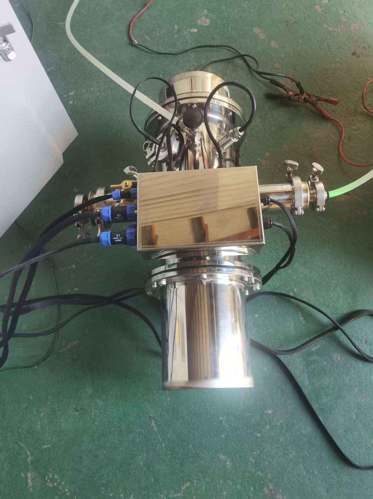
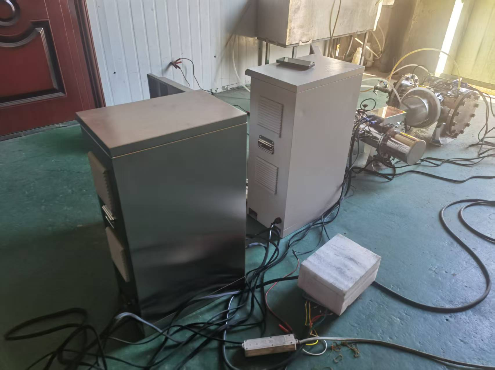
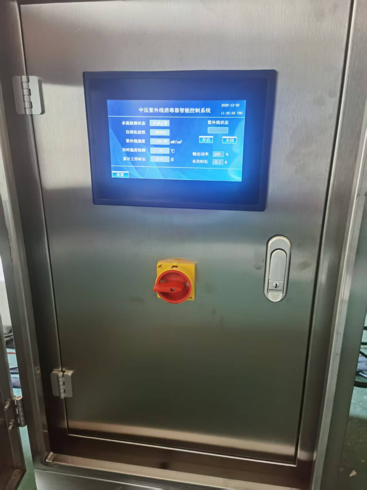
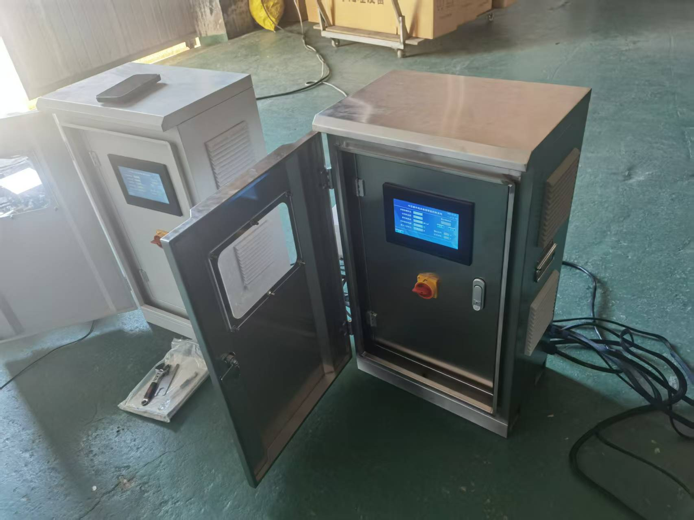

2025 Hotel Pool 1.8 kW Medium-Pressure UV Project: Equipment Supply for a 100–120 m³/h Recirculation System
Case published 24 September 2026 · Equipment-supply and factory-test record
- Project year
- 2025
- Application
- Hotel swimming pool
- Recirculation pumps
- One
- Actual recirculation-pump flow
- 100–120 m³/h, confirmed by the customer
- Actual flow through the UV reactor
- 100–120 m³/h; UV and pump are installed in series
- Medium-pressure UV model
- KCM-UV1.8KW
- UV installation position
- Suction side of the recirculation pump, confirmed by the customer
- Total pool-water volume
- 600 m³
- Photographs
- Equipment and factory-test photographs, not final site-installation photographs

Project Overview
This project was supplied in 2025 for a hotel swimming pool. The pool has one recirculation pump with an actual operating flow of 100–120 m³/h and one KCM-UV1.8KW medium-pressure UV unit. The UV reactor is installed in series on the pump suction side, so its actual hydraulic flow is also 100–120 m³/h.
The UV unit is a secondary treatment component intended to strengthen microbial control in the recirculation system and help manage some chloramines. The pool must still maintain the filtration, circulation, disinfectant residual, pH, make-up water, and ventilation required by the applicable local rules.
What Turnover Time Does a 600 m³ Pool Have at This Flow?
The total pool-water volume is 600 m³ and the actual recirculation flow is 100–120 m³/h. Their relationship is:
Theoretical turnover time = total pool-water volume ÷ actual recirculation flow
Using the project values:
600 m³ ÷ 100–120 m³/h = 5–6 hours
The system therefore has a theoretical turnover time of approximately five to six hours. For reference, commercial pools are commonly designed to turn over every three to four hours, so this figure is longer than that common reference. Actual operation will also depend on hydraulic distribution, pipe resistance, filter condition, and pump performance. Compliance with local turnover requirements should still be checked against the approved design and operating records.
Equipment and Factory-Test Record

The photographs show a stainless-steel reactor with separate control cabinets. The control system can display items such as equipment status, UV intensity, water temperature, operating time, and power output. The exact alarms, interlocks, and remote signals supplied for this project should be confirmed from its electrical drawings and factory documents.


The Actual UV Flow Is 100–120 m³/h, but This Is Not Validated Performance
The project has confirmed that the UV reactor and recirculation pump operate in series. The pump’s actual operating flow is 100–120 m³/h, so the actual hydraulic flow through the UV reactor is also 100–120 m³/h.
However, “100–120 m³/h passes through the reactor” is not the same as “the unit delivers a validated UV dose at 100–120 m³/h.” This project profile reports the actual hydraulic flow and does not present it as an effective UV dose, minimum UV transmittance, or third-party validated performance claim.
This project should therefore not yet be described as proving that:
- the unit achieves a fixed UV dose at 100–120 m³/h;
- combined chlorine fell by a stated percentage after installation; or
- the system satisfies a particular certification or pathogen-reduction requirement.
Those statements would require the actual flow through the reactor, minimum UV transmittance, third-party validation range, target dose, commissioning records, and water-test results.
What Requires Attention When UV Is Installed on the Pump Suction Side?
The project has confirmed that the UV unit is installed on the suction side of the recirculation pump. Because this position affects pressure conditions, venting, dry-run protection, and maintenance, the project design and operation should confirm:
- Whether isolation valves, venting, and draining provisions are fitted.
- Whether a bypass is present and how its valves are interlocked.
- Whether the reactor remains completely full and protected against trapped air.
- Whether the inlet pressure remains within the manufacturer’s permitted range.
- Whether the final arrangement follows the equipment manual and requirements of the local authority having jurisdiction.
This is the confirmed arrangement for this project, but it should not be treated as a general recommendation for every pool. Other projects should determine the installation position from the filter, pump, and chemical-injection layout, pressure conditions, equipment instructions, and local rules.
Documented Project Scope
The project records document the following:
- a medium-pressure UV equipment-supply project for a hotel pool was completed in 2025;
- the project has one recirculation pump, and both the actual pump flow and UV flow are within 100–120 m³/h;
- the UV model is KCM-UV1.8KW;
- physical photographs show the reactor, control cabinets, and factory testing; and
- the total pool-water volume is 600 m³, giving a theoretical turnover time of approximately five to six hours at 100–120 m³/h.
This page documents equipment supply and factory testing. It does not extend those records into claims about post-installation chloramine reduction, indoor air-quality changes, specific pathogen reduction, or long-term operating cost.
Related Reading
- Why Use Medium-Pressure UV in a Commercial Pool?
- How to Size a UV Water-Treatment System
- Medium-Pressure UV Systems
Recommended for this application
Related KONCHE systems and guides for the duties discussed in this article: